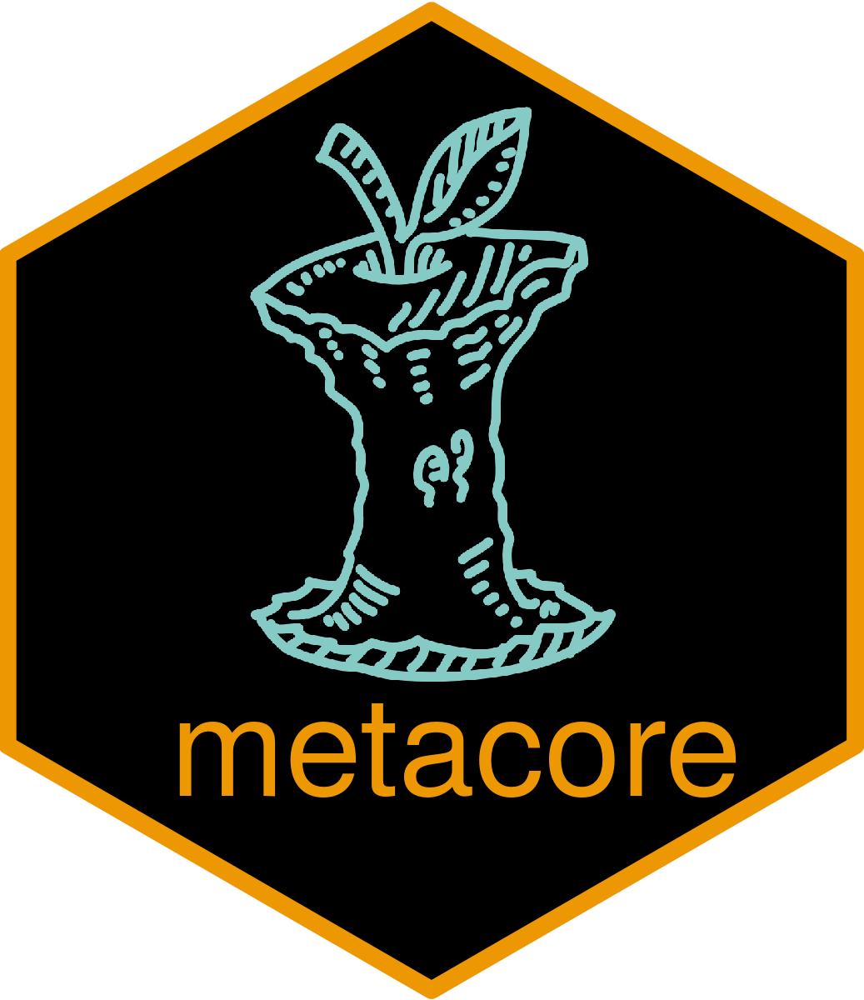
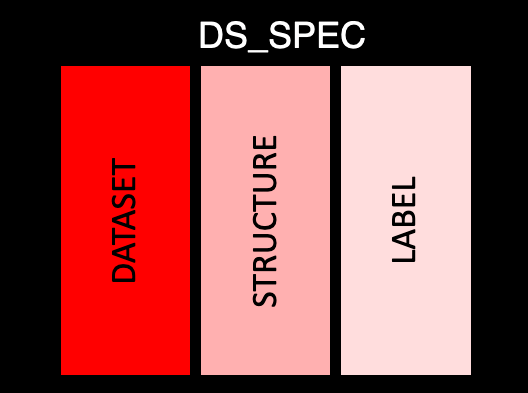
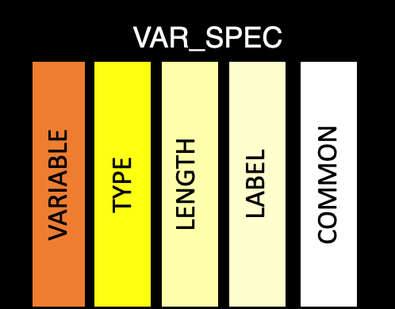
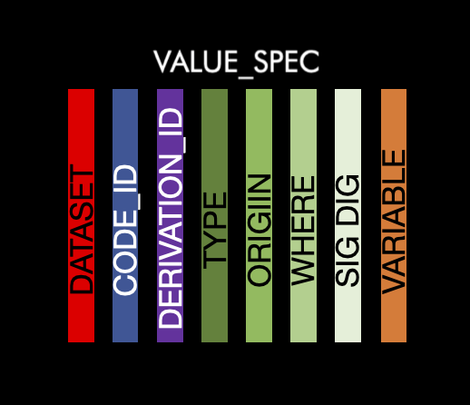
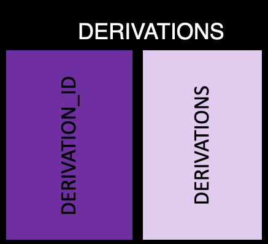
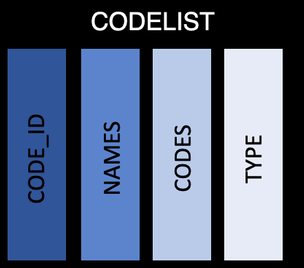
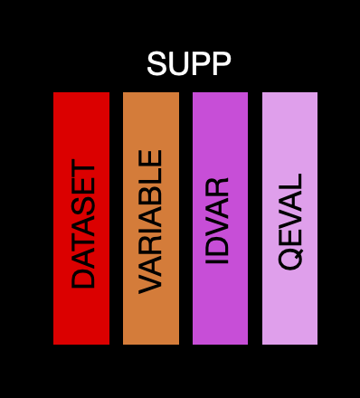

metacore 
Programming for clinical trial data analysis tends to be very standardized. With data standards such as CDISC, expectations tend to be very clearly defined. Within these programming activities, there’s ample room for the use of metadata. Metadata can be used for several different purposes, such as applying dataset attributes, establishing sort sequences, working with controlled terminology, and more. Despite CDISC standards, organizations tend to have their own means of storing metadata, be it in excel spreadsheets, databases, and more.
The purpose of metacore is to establish a common foundation for the use of metadata within an R session. This is done by creating an R object that can hold the necessary data in a standardized, immutable structure (using R6) that makes it easy to extract out necessary information when needed. Users can read in their metadata from their various sources. To make this easy, we’ve provided some helper functions - and even have readers that can read directly from Define.xml 2.0. By establishing a common and consistent object in memory, further packages that support these work flows can have a common foundation upon which tools can be built that leverage metadata in the future. This reduces the need to hold different data structures containing metadata and instead allows programs to pull this information from a centralized source.
Installation
You can install the current development version of metacore from github with:
devtools::install_github("atorus-research/metacore")Structure
A metacore object is made-up of 6 different tables, which are connected with a series of identifying columns. The goal of these tables is to normalize the information as much as possible, while keeping together like information. Each table has a basic theme to make them easier to remember. They are as follows:
ds_spec: Contains dataset level information
ds_vars: Bridges the dataset and variable level information
var_spec: Contains variable level information
value_spec: Contains value level information
derivations: Contains all derivations
codelist: Contains information about code/decodes, permitted values and external libraries
supp: Contains information specific to supplemental variables
Here is a schema of how all this fits together:
ds_spec 
This table covers the basic information about each dataset. There is only a single row per dataset, with the following information:
dataset: The abbreviated name of the dataset (e.g. AE)
structure: Value structure of the dataset as a sting
label: Dataset label
ds_vars 
This table contains the information that bridges between purely dataset level and purely variable level. There is one row per dataset per variable:
dataset: The abbreviated name of the dataset. This will match to the name in ds_spec
variable: Variable name
key_seq: Sequence key, which are the variables used to order a dataset. This is a column of integers, where 1 is the first sorting variable and 2 is the second etc. If the variable is not used in sorting it will be left
NAorder: Order sets the order of the columns to appear in the dataset. This is also a numeric value
keep: Logical value about if the variable needs to be kept
core: ADaM core, which should be one of the following values: “Expected”, “Required”, “Permissible”, “Conditionally Required”, “Conditionally Expected”, or NA. For more information about core see CDISC
supp_flag: Logical to determine if the variable is in the supplemental datasets
var_spec 
This table contains the purely variable level information. The goal is there is a single row per variable, which is common across all datasets. This helps ensure variables follow the CDISC standard. But, this isn’t always possible, so if information for a given variable differs across datasets, the variable will be recorded as dataset.variable in the variable column.
variable: Variable name, which should match the name in ds_spec. Unless the variable needs to be duplicated, then the name will be a combination of the the dataset name and variable name from ds_spec (dataset.variable)
type: Variable class
length: Variable length (while not relevant to R datasets, this is important for when creating XPT files)
label: Variable label
common: Common across ADaM datasets
format: Variable format
value_spec 
This table contains the information the information at the value level. There will be at least one row per dataset/variable combination. There is more than one row per dataset/variable combination if the combination has values which have differing metadata. For instance LBORRES that are different data types depending on the value. The information contained are as follows:
dataset: The abbreviated name of the dataset. This will match to the name in ds_spec
variable: Variable name. This will match to the name in ds_vars
type: String of the value type
origin: Origin of the value
sig_dig: Significant digits of the value
code_id: ID for the code list to match the id in the codelist table
where: Value of the variable
derivation_id: ID for the derivation to match with the derivation table
derivations 
This table has all the derivation information, with one row per derivation ID and the following information:
derivation_id: The ID, which should match to value_spec
derivation: Text describing the derivation
codelist 
This table contains the code lists, permitted value lists, and external libraries nested within a tibble. There is only a single row per list/library, with the following information:
code_id: the ID used to identify the code list. This should be the same as the code_id in val_spec
name: Name of the code list
code: A list of tibbles (for code / decode combinations) and vectors (for permitted values and libraries), which contain all the codes
type: An indicator of if the information in the code column is a code/decode table, permitted value, or external library
supp 
This table contains the information needed to create supplemental tables. If you want to add a variable which will go into a supplemental qualifier then you can create as normal (i.e. label information going to the var_spec table and derivation and origin going into the value_spec table), but you need to flag it as supplemental in the ds_vars table and add a row to the supp table. There is only a single row per dataset/variable, with the following information:
dataset: The abbreviated name of the dataset. This will match to the name in ds_spec
variable: Variable name. This will match to the name in ds_spec
idvar: ID variable used for the supplemental variable. Can be left missing if not needed
qeval: Evaluator for the supplemental variable
To get more information about the metacore objects and how to build a specification reader, please see our vignettes.